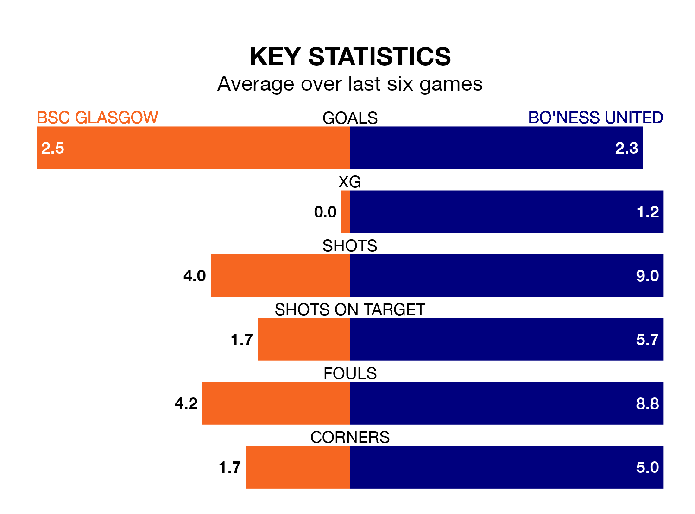

Bo'ness United travel to the moreroom.com Stadium for Tuesday's late match against BSC Glasgow looking to bounce back from defeat last time out in the Lowland Football League.
Bo'ness, who sit fourth in the league after 32 games, fell to a 4-2 away defeat to Hearts U21 on Friday.
They face a BSC Glasgow side who picked up a win in their last match, a 4-1 victory against Stirling University, and who sit 15th in the table.
With 64 goals in 32 games so far this season, Bo'ness are scoring more than average in the league with 2.0 goals per game. And they are conceding fewer than average, letting in 45 goals at a rate of 1.4 per game.
BSC Glasgow, meanwhile, are below average scorers, with 1.6 goals per game, compared to a league average of 1.7. They have conceded 1.8 goals per game.
In the last 10 years, BSC Glasgow and Bo'ness have played each other on six occasions. BSC Glasgow won one of them, Bo'ness four, and they drew once.
On average, BSC Glasgow scored 1.8 goals and Bo'ness 2.7 in those matches.
Their last meeting was on September 30, when Bo'ness won 3-0 at home.
The home side are in mixed form in the Lowland Football League, with three wins and three losses from their last six games.
With four wins and a draw over that period, United's form is better – they have taken 13 points from 18, compared to BSC Glasgow's nine.
Updated: 11:31 (UTC), 15/04/24